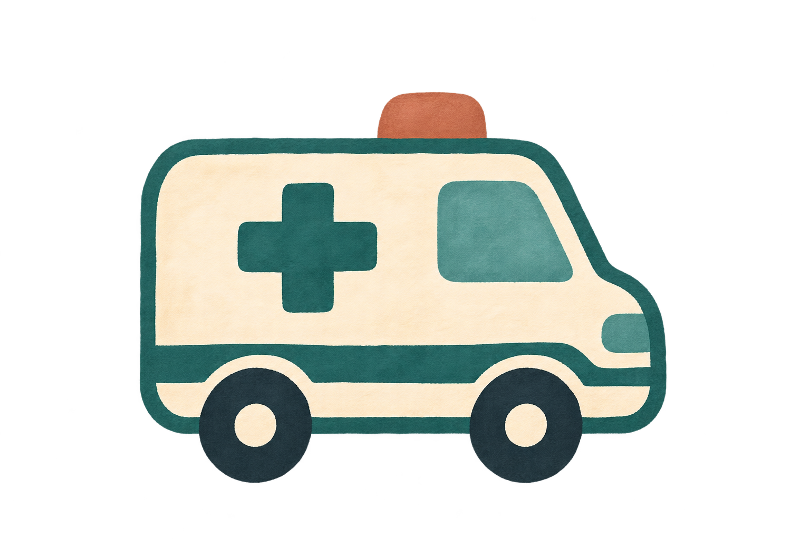

Alex’s story · Scene 1 of 3
Something feels different
Alex has been home for four days after giving birth to Wren. Sam is now at work, and Wren is sleeping nearby.
When Alex uses the bathroom, she notices that her bleeding has suddenly become much heavier. She has soaked a full maternity pad in 30 minutes, and when she stands, she feels dizzy and thinks she might faint.
She remembers being told by the nurses to expect some bleeding after birth, but this feels different.
“Is this part of a normal recovery, or do I need help?”
Getting help when it feels difficult
Alex reaches for her phone, then hesitates.
“Sam has the car. What will happen with Wren? I don’t want to cause a fuss if I’m wrong.”
Her sister, Sarah, lives too far away to arrive quickly, but her neighbour, Lisa, has offered to help.
Your recovery matters, too.
You do not need to know the diagnosis before asking for help. Describe what is happening and tell the healthcare team that you recently had a baby, along with any other important medical details.

Alex calls 911, goes to the hospital, and receives emergency assessment and treatment. A few days later, as she prepares to return home, she wants to make sure she understands the instructions she is given.
Continue to Scene 2